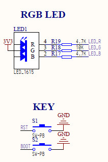
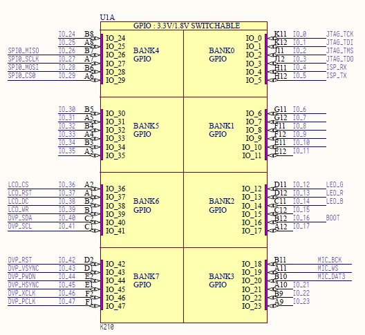
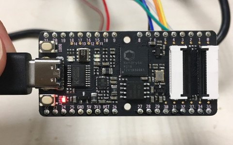
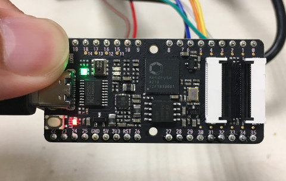

首先查看板上LED和Button的電路圖位置


#include <stdio.h>
#include <unistd.h>
#include "fpioa.h"
#include "gpio.h"
int main(void)
{
fpioa_set_function(12, FUNC_GPIO1); // LED
fpioa_set_function(13, FUNC_GPIO2); // LED
fpioa_set_function(14, FUNC_GPIO3); // LED
fpioa_set_function(16, FUNC_GPIO4); // BOOT Button
gpio_init();
gpio_set_drive_mode(1, GPIO_DM_OUTPUT); // GPIO1
gpio_set_drive_mode(2, GPIO_DM_OUTPUT); // GPIO2
gpio_set_drive_mode(3, GPIO_DM_OUTPUT); // GPIO3
gpio_set_drive_mode(4, GPIO_DM_INPUT); // GPIO4
gpio_pin_value_t value = GPIO_PV_HIGH;
gpio_set_pin(1, value); // GPIO1
gpio_set_pin(2, value); // GPIO2
gpio_set_pin(3, value); // GPIO3
while (1) {
if (gpio_get_pin(4)) { // GPIO4
gpio_set_pin(1, GPIO_PV_HIGH);
}
else {
gpio_set_pin(1, GPIO_PV_LOW);
}
}
return 0;
}
由於GPIO可以Remap，因此，司徒分別Remap到GPIO1~GPIO4腳位
編譯程式
$ cmake .. -DPROJ=button -DTOOLCHAIN=/opt/k210/bin && make
接著使用GDB除錯或者使用kflash燒錄
完成

